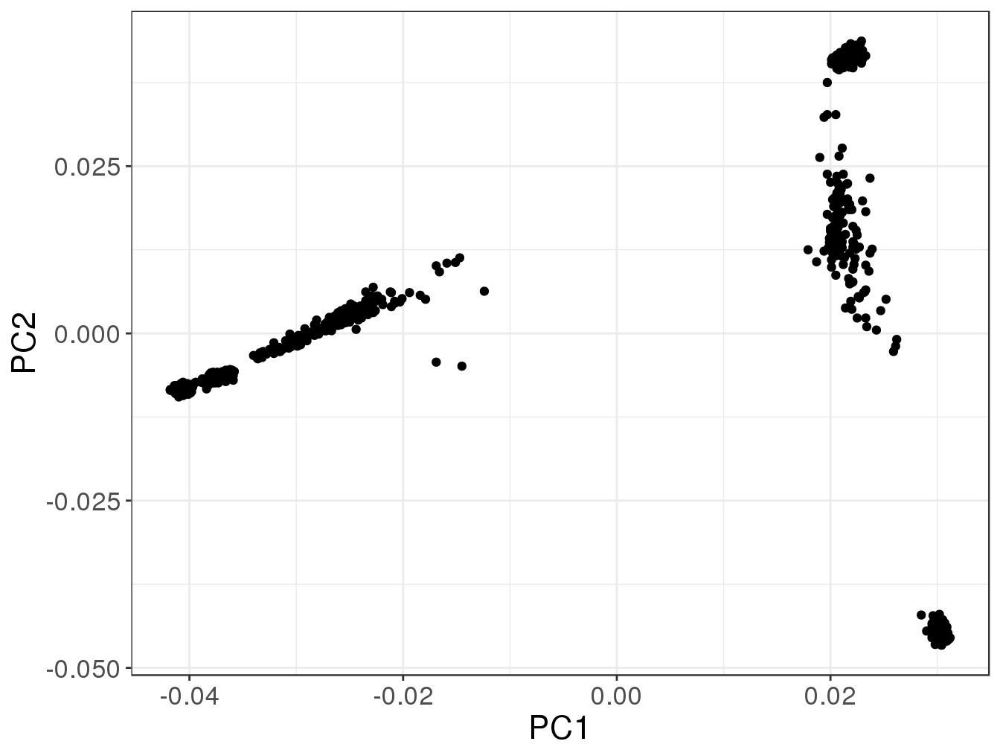

A biological analysis is sometimes more appropriately called a pipeline. This is because it generally consists of many steps, using many different software and data formats. Yet, these analysis pipelines are becoming very complex and usually makes use of many bash/perl scripts. For people like me who don’t really know that much bash or perl, it can be really hard to understand those scripts.
What is important in these pipelines? To list what comes to my mind:
I think we can do each of these operations in R. And I think we should.
The main reason would be to put all your analysis in a single notebook where you have all your code, results and possibly some writing. Using notebooks is good practice and makes it possible to have a fully reproducible analysis, which will a standard in years to come. Another reason is simply that it’s easier!
In this tutorial, I’ll show an example of a moderately complex analysis of the HapMap3 data (phase III), all in R.
Don’t just give a link to the data, use an R command to download the data directly. Mouse clicks prevent reproducibility.
# Get the URL of the data
site <- "https://ftp.ncbi.nlm.nih.gov/hapmap/genotypes/2009-01_phaseIII/plink_format/"
name <- "hapmap3_r2_b36_fwd.qc.poly"
ext <- ".tar.bz2"
# Download the file
download.file(paste0(site, name, ext), tmp <- tempfile(fileext = ext))
# Uncompress the downloaded file in directory data/
untar(tmp, exdir = "data")PLINK is a very efficient command-line software very useful for preprocessing of GWA data (Chang et al. 2015; S. Purcell et al. 2007).
plink <- bigsnpr::download_plink()files <- rev(list.files("data/hapmap3_pop", full.names = TRUE))
write(files[-(1:2)], tmp <- tempfile(), ncolumns = 2)
library(glue)
system(glue("{plink} --file {tools::file_path_sans_ext(files[1])}",
" --merge-list {tmp}",
" --out data/hapmap3"))system(glue("{plink} --bfile data/hapmap3",
" --maf 0.05",
" --geno 0.05",
" --hwe 1e-10",
" --autosome",
" --make-bed",
" --out data/hapmap3_qc"))There exists much more quality control steps but it is not the objective of this tutorial. For details, please refer to (Anderson et al. 2010).
First, we need to remove long-range LD regions and use pruning.
# Write long-range LD regions in a file
bigsnpr:::write.table2(bigsnpr::LD.wiki34, tmp <- tempfile())
# Get pruned SNPs
system(glue("{plink} --bfile data/hapmap3_qc",
" --exclude {tmp} --range",
" --indep-pairwise 50 5 0.2",
" --out {tmp}"))
# Filter the data again
system(glue("{plink} --bfile data/hapmap3_qc",
" --extract {tmp}.prune.in",
" --make-bed",
" --out {tmp}"))# Get EIGENSOFT
download.file("https://data.broadinstitute.org/alkesgroup/EIGENSOFT/EIG-6.1.4.tar.gz",
tmp2 <- tempfile())
smartpca <- "EIG-6.1.4/bin/smartpca"
untar(tmp2, files = smartpca)parfile <- glue("{tmp}.pca.par")
## Renaming so that Eigensoft can recognize file type
system(glue("cp {tmp}.bim {tmp}.pedsnp"))
## Renaming so that Eigensoft can recognize file type
system(glue("cp {tmp}.fam {tmp}.pedind"))
writeLines(glue(
"genotypename: {tmp}.bed
snpname: {tmp}.pedsnp
indivname: {tmp}.pedind
evecoutname: {tmp}.pca.evec
evaloutname: {tmp}.eval
altnormstyle: NO
numoutevec: 10
numoutlieriter: 0
numoutlierevec: 10
outliersigmathresh: 6
qtmode: 0
fastmode: 0"
), con = parfile)
## PCA
system(glue("{smartpca} -p {parfile}"), ignore.stdout = TRUE)# Get result and plot it (data.table is faster for reading/writing files)
evec <- data.table::fread(glue("{tmp}.pca.evec"),
data.table = FALSE, skip = 1)
library(ggplot2)
bigstatsr:::MY_THEME(ggplot(evec)) +
geom_point(aes(V2, V3)) +
labs(x = "PC1", y = "PC2")
It would be easy to make functions that implements whole procedures in R thanks to system calls and package glue. This could make pipelines more understandable and fully reproducible.
Anderson, Carl A, Fredrik H Pettersson, Geraldine M Clarke, Lon R Cardon, Andrew P Morris, and Krina T Zondervan. 2010. “Data Quality Control in Genetic Case-Control Association Studies.” Nature Protocols 5 (9). Europe PMC Funders: 1564.
Chang, Christopher C, Carson C Chow, Laurent CAM Tellier, Shashaank Vattikuti, Shaun M Purcell, and James J Lee. 2015. “Second-Generation Plink: Rising to the Challenge of Larger and Richer Datasets.” Gigascience 4 (1). BioMed Central: 7.
Purcell, Shaun, Benjamin Neale, Kathe Todd-Brown, Lori Thomas, Manuel AR Ferreira, David Bender, Julian Maller, et al. 2007. “PLINK: A Tool Set for Whole-Genome Association and Population-Based Linkage Analyses.” The American Journal of Human Genetics 81 (3). Elsevier: 559–75.